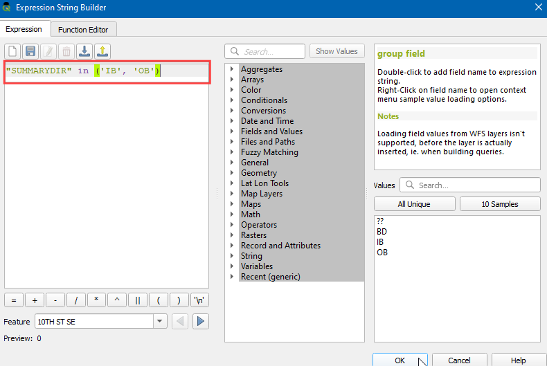
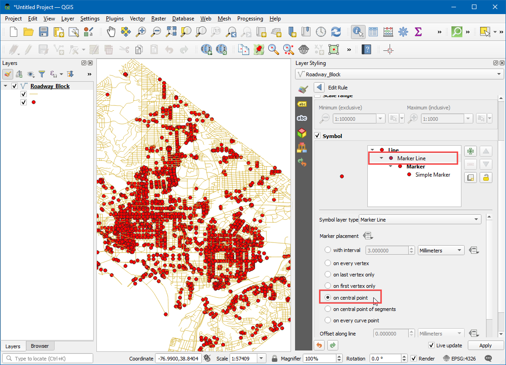

تجسم و مسیریابی شبکه پایه (QGIS3)¶
ایجاد، تجسم و مدیریت شبکه ها بخش مهمی از GIS است. بسیاری از انواع زیرساختهای فیزیکی مانند جادهها، راهآهنها، خدمات شهری را میتوان به عنوان شبکههایی با خطوط و گرهها - با ویژگیهای متصل به آنها مدلسازی کرد. در این آموزش، نحوه مدلسازی شبکههای جادهای را یاد میگیریم و از برخی تکنیکهای سبک برای تجسم ویژگیهای مسیریابی استفاده میکنیم. ما همچنین از ابزارهای داخلی QGIS3 برای تجزیه و تحلیل شبکه استفاده خواهیم کرد که برای یافتن کوتاهترین مسیر بین 2 نقطه همراه با شبکه.
بررسی اجمالی کار¶
ما یک لایه بلوک جاده را برای واشنگتن دی سی می گیریم، اتصال را تجسم می کنیم و یک شبکه برای پیدا کردن کوتاه ترین مسیر بین هر 2 نقطه در شهر ایجاد می کنیم.
مهارت های دیگری که یاد خواهید گرفت¶
نحوه استفاده از لغو تعریف شده داده برای تراز کردن نماد فلش بر اساس جهت خط.
داده ها را دریافت کنید¶
دولت ناحیه کلمبیا صدها مجموعه داده را آزادانه در «کاتالوگ داده باز <https://opendata.dc.gov/>» به اشتراک می گذارد.
"Block Roadway <https://opendata.dc.gov/datasets/roadway-block>"_ را که توسط داده های DCGISopendata به اشتراک گذاشته شده است را به عنوان یک فایل شکل دانلود کنید.

برای راحتی کار، میتوانید مستقیماً یک نسخه از مجموعه دادهها را از لینکهای زیر دانلود کنید:
منبع داده: [DCOPENDATA]
روش¶
فایل «Roadway_Block-shp.zip» دانلود شده را در پنل :guilabel:`Browser پیدا کنید. آن را گسترش دهید و فایل «Roadway_Block.shp» را روی بوم بکشید.

یک لایه خط جدید به نام "Roadway_Block" را خواهید دید که به پنل :guilabel:"Layers" اضافه شده است. این لایه نشان دهنده هر جاده در واشنگتن دی سی است. ابزار :guilabel:'Identify' را در :guilabel:'Attributes Toolbar' انتخاب کنید. روی هر بخش جاده کلیک کنید تا ببینید چه ویژگی هایی به آن متصل شده است. ویژگیهای استانداردی مانند Route-name، Road-type و غیره وجود دارد. یک ویژگی به نام "SUMMARYDIR" وجود دارد. این یک ویژگی وارداتی برای مسیریابی است زیرا مشخص می کند که قطعه دو طرفه یا یک طرفه است. این شامل 4 مقدار مختلف است.
BD(هر دو جهت) برای خیابان های دوطرفه.OB(خارج از مرز) برای خیابان های یک طرفه که در آن تردد در جهت خط مجاز است (نقطه شروع به نقطه پایان) وIB(In Bound) برای خیابان های یک طرفه که در آن تردد در جهت خط مجاز است. ترافیک در جهت مخالف خط جریان دارد. همچنین مقدار??وجود دارد که در آن ترافیک دو طرفه را فرض می کنیم. اکنون از اطلاعات موجود در آن ویژگی برای نمایش یک فلش در خیابان های یک طرفه استفاده می کنیم

روی دکمه :guilabel:'Open the layer Styling Panel' در پنل :guilabel:`Layers کلیک کنید. رندر «مبتنی بر قانون» را از منوی کشویی انتخاب کنید.

ما یک سبک جدید با فیلتر فقط برای جاده های یک طرفه ایجاد خواهیم کرد. روی دکمه Add rule + کلیک کنید.

در گفتگوی :guilabel:'Edit rule'، روی دکمه :guilabel:'Expression کلیک کنید.

در گفتگوی سازنده رشته بیانی، بخش :guilabel:`Fields and Values را در پنل میانی گسترش دهید. ویژگی
SUMMARYDIRرا انتخاب کنید و روی :guilabel:`All Unique در پنل سمت راست کلیک کنید. 4 مقداری که قبلاً در مورد آنها صحبت کردیم ظاهر می شوند. داشتن این مقادیر در اینجا به عنوان مرجع در ساخت عبارت کمک می کند. همچنین، میتوانید روی هر مقداری دوبار کلیک کنید تا آنها را به عبارت اضافه کنید.

هدف ایجاد عبارتی است که تمام خیابان های یک طرفه را انتخاب کند. عبارت زیر را وارد کرده و روی OK کلیک کنید.
"SUMMARYDIR" in ('IB', 'OB')
در مرحله بعد، :guilabel:` نوع لایه نماد را به
خط نشانگرتغییر دهید.

"در نقطه مرکزی" را در زیر :guilabel:"قرار دادن نشانگر" انتخاب کنید.

روی نماد "نشانگر ساده" کلیک کنید. به پایین پیمایش کنید و نشانگر «سرپیکان_پرشده» را انتخاب کنید. خواهید دید که علامت فلش مانند اکنون در خیابان های یک طرفه ظاهر می شود. اما همه آنها به یک جهت اشاره می کنند، در حالی که ما می دانیم که فیلتر ما شامل جاده هایی در چندین جهت است. ما میتوانیم نمادها را با یک بازنویسی تعریفشده از داده برای مقدار :guilabel:` Rotation اصلاح کنیم.

روی دکمه رد تعریف دادههای نادیده گرفته شده در کنار :guilabel:`چرخش کلیک کنید.

می توانیم یک عبارت شرطی قرار دهیم که بسته به جهت یک طرفه، مقادیر چرخش متفاوتی را برمی گرداند. چرخش 180 درجه برای جاده با جهت مخالف، جهت را کامل میکند، در این حالت، جادههای با ویژگی "IB" را 180 درجه میچرخانیم، بنابراین همه جادهها جهت جریان ترافیک صحیح را خواهند داشت. عبارت زیر را وارد کرده و روی OK کلیک کنید.
if( "SUMMARYDIR" = 'IB', 180, 0)
اکنون سر پیکان ها را می بینید که در جهت درست جاده تراز شده اند. برای بی نظم نگه داشتن استایل، پیکان ها را فقط در خیابان های یک طرفه نمایش می دهیم. خیابان های بدون برچسب دو طرفه فرض می شوند. اکنون که سبک شبکه را به درستی طراحی کرده ایم، می توانیم تحلیلی انجام دهیم. به بروید.

الگوریتم را جستجو و مکان یابی کنید. برای راه اندازی آن دوبار کلیک کنید.

In the Shortest Path (Point to Point) dialog, select
Roadway_Blockas the Vector layer representing network. Keep the Path type to calculate asShortest. Next, we need to pick a start and endpoint. You can click the ... button and click on any point on the network in the canvas. If you want to replicate the results in this tutorial, you can enter-76.99730092166396,38.887624846748984as the Start point and-76.99154831062152,38.89151000569929as the End point. Expand the Advanced parameter section. ChooseSUMMARYDIRas the Direction field. You must be familiar with the one-way direction values for the forward and backward traffic flow. EnterOBas the Value for the forward direction andIBas the Value for the backward direction. Keep other options to their default values and click Run.

الگوریتم از هندسه لایه و پارامترهای ارائه شده برای ساخت یک نمودار شبکه استفاده می کند. سپس از این نمودار برای یافتن کوتاه ترین مسیر بین نقطه شروع و پایان استفاده می شود. پس از اتمام الگوریتم، یک لایه جدید "کوتاه ترین مسیر" را خواهید دید که به پنل :guilabel:`Layers اضافه شده است که کوتاه ترین مسیر را بین نقطه شروع و پایان نشان می دهد.

خواهید دید که مسیرهای ممکن زیادی بین نقطه شروع و پایان وجود دارد. اما با توجه به محدودیت های شبکه - مانند یک طرفه بودن، نتیجه کوتاه ترین مسیر ممکن است. همیشه ایده خوبی است که تحلیل ها و فرضیات خود را تأیید کنید. یکی از راههای آسان برای تأیید اعتبار این است که از یک سرویس نقشهبرداری شخص ثالث استفاده کنید تا ببینید آیا نتایج آنها با نتایجی که ما به دست آوردهایم مطابقت دارد یا خیر. در اینجا کوتاهترین مسیری است که توسط Google Maps <https://goo.gl/maps/XwTXTkvuaCuteocr8>` بین همان نقطه شروع و پایان پیشنهاد شده است. همانطور که می بینید کوتاه ترین مسیر توصیه شده دقیقاً با نتایج ما مطابقت دارد - تأیید تجزیه و تحلیل ما.

If you want to give feedback or share your experience with this tutorial, please comment below. (requires GitHub account)